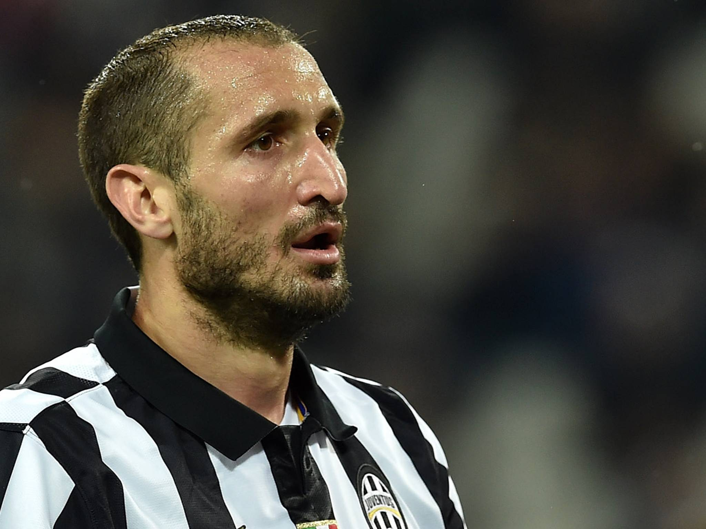
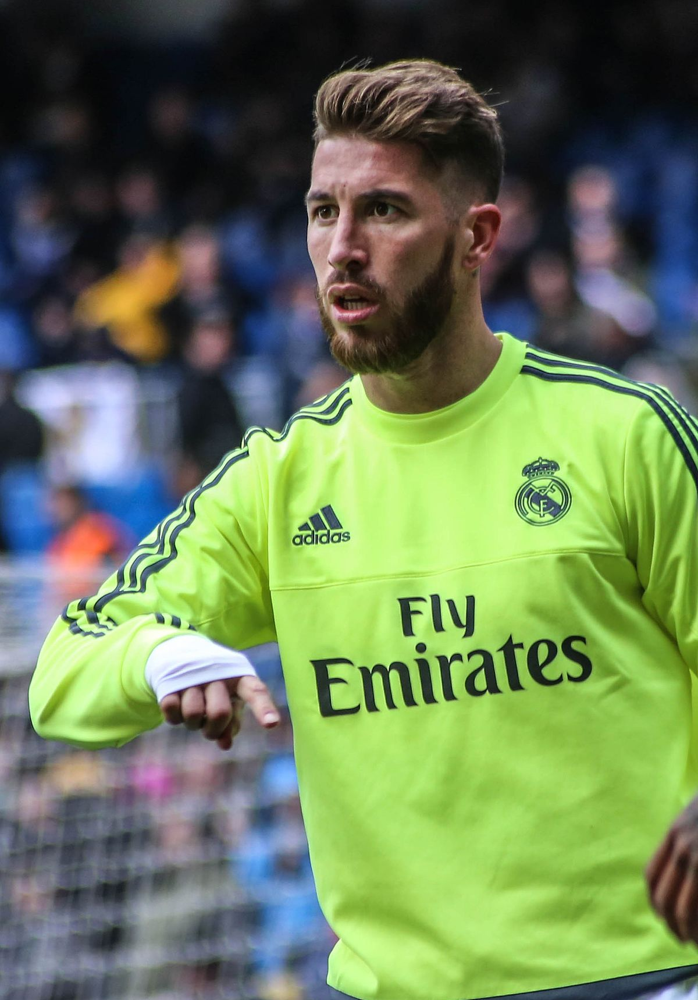
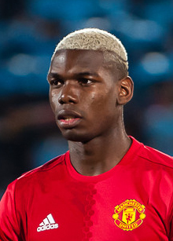
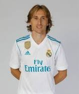
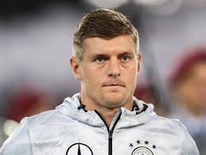
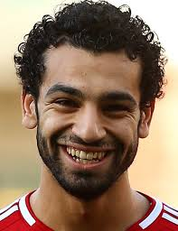
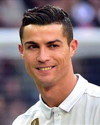

Clique no jogador para obter infomações sobre ele.

Atualmente melhor goleiro do mundo, muito disso se deve por suas grandes atuações pelo Manchester United e pela seleção que demonstram muita agilidade, tempo de bola e passar segurança a seu time que sempre pode contar com ele. Mas tambem por conta do Manuel Neuer ter passado grande parte da temporada lesionado.
Melhor lateral direito do mundo, não sendo o melhor marcador, o seu poder de aparecer na frente o torna o melhor. Com agilidade, drible, boa saida de bola, bom cruzamento, capacidade de tabelar e chegar a area finalizando o tornam o melhor.
um dos melhores zagueiros na atualidade, muito caracterizado por ser um dos simbolos do poderio defensivo do futebol italiano, Chiellini demonstra grande tempo de bola tanto aérea quanto com a bola no chão, tem grande imposição fisica e agilidade.
Melhor zagueiro da atualidade, é um lider dentro de campo, é rapido, é muito bom na bola aérea(tanto defensiva quanto ofensiva), tem bom passe, grande imposição fisica e não se amedronta em jogos decisivos.
Melhor lateral esquerdo da atualidade incontestavelmente, é um lider dentro de campo, é rapido, tem otimo drible, passe, cruzamento, chega bem a frente finalizacom com maestria e fazendo gols importantes ainda que seja lateral, chuta muito bem de longa distancia e superou seu problema que era a marcação.
um dos simbolos de que o time tem 3 volantes, mas vai ir pro jogo, o Pogba é um jogador de excelente passe, é bom na bola aérea, finaliza muito bem de onde estiver, chega no ataque, é rapido e tem grande visão de jogo.
optamos por um esquema com 3 volantes que marcam, mas principalmente sabem jogar com a bola no pé, e o Modrić não é só um eximio marcador como um é um otimo armador de jogo. Tem grande visão de jogo, dribla muito bem, recompõem a defesa com velocidade, faz cobertura dos laterais quando eles sobem, longe de ser um dos mais rapidos, não deixa de ser muito rapido em drible deixando varios adversarios para trás sem perder velocidade.
optamos por um esquema com 3 volantes que marcam, mas principalmente sabem jogar com a bola no pé, e o Kroos é um deles com excelente visão de jogo, precisão nos passes, grandes inversões, poder de marcação, corbetura, bons cruzamentos, grande fisico e chute de longa distancia.
Indiscutivelmente um dos melhores da história, podendo também fazer a ponta direita num 4-3-3. Méssi é um jogador de muita qualidade técnica, imprevisivel, visão de jogo, tem uma otima finalização, otimo em assistencias, dono de um drible curto excepcional também dito por muito com imparavel, tem otimo passe, é versatil podendo jogar em varias posições diferentes, muito decisivo contra o goleiro e no jogo.
Um dos grandes candidatos a bola de ouro, salah é um jogador de muita velocidade, tem otimo drible mantendo uma alta velocidade ao executalos, tem um otima finalização, também é muito bom em assistencias, além de ser um versatil podendo jogar de atacante, ponta, e meia-atacante, finaliza com maestria e tem uma grande capacidade de decicir o jogo.
Este que para mim é o melhor jogador do mundo, um jogador que cresce muito na champions, tem uma media de gols por jogo muito grande, por sua idade acaba sendo poupado em jogos menores do campionato espanhol nos quais teria uma maior chance de fazer gols para poder participar de jogos decisivos 100%, tem fisico invejavel, finaliza com excelência de qulquer lugar, muito raido, tem uma otima bola aérea, é bom com tabelas e joga muito em jogos importantes.
